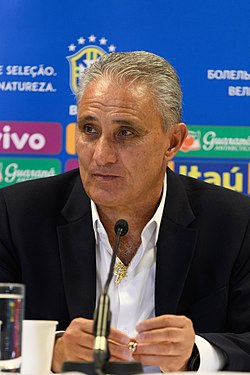

A Seleção Brasileira de Futebol representa o Brasil nas competições de futebol da CONMEBOL e FIFA. Formada em 1915 e considerada um dos maiores símbolos do país, é chamada de "Seleção", "Seleção Canarinho", "Verde-Amarela", além de outras alcunhas. É a seleção mais bem-sucedida da história do futebol mundial, sendo a recordista em conquistas em Copas do Mundo, com cinco títulos invictos (1958, 1962, 1970, 1994 e 2002) e quatro títulos da Copa das Confederações FIFA (1997, 2005, 2009 e 2013). Dentre outras conquistas importantes, a seleção detém nove títulos da Copa América (1919, 1922, 1949, 1989, 1997, 1999, 2004, 2007 e 2019). Conquistou ainda quatro Copa das Confederações FIFA (1997, 2005, 2009 e 2013), competição na qual também é a maior vencedora da história. Nos Jogos Olímpicos de 2016, sediados no Rio de Janeiro, conquistou pela primeira vez a medalha de ouro, vencendo a seleção alemã nos pênaltis. O feito se repetiu em 2021, no Japão quanto conquistou a medalha de ouro no futebol pela segunda vez.
Adenor Leonardo Bachi[1], mais conhecido como Tite (Caxias do Sul, 25 de maio de 1961), é um técnico e ex-futebolista brasileiro que atuava como volante. Atualmente comanda a Seleção Brasileira. Em 2019, tornou-se o primeiro treinador a ser campeão da Copa América, da Copa Libertadores da América e da Copa Sul-Americana. É um dos quatro treinadores que venceram Copa Libertadores, Campeonato Brasileiro e Copa do Brasil (tríplice coroa clássica), sendo o único do conjunto que também venceu a Copa do Mundo de Clubes da FIFA.
| Principais Jogadores | |||
|---|---|---|---|
| Nome | Idade | Altura | Peso |
| Thiago Silva | 38 | 1,83M | 78Kgs |
| Marquinhos | 28 | 1,83M | 76kgs |
| Danilo | 31 | 1,83M | 76kgs |
| Alex Telles | 29 | 1,80M | 78Kgs |
| Éder Militão | 24 | 1,85m | 78Kgs |
| Bremer | 25 | 1,88m | 78Kgs |
| Ibañez | 23 | 1,85M | 75kgs |
| Renan Lodi | 24 | 1,73M | 68kgs |